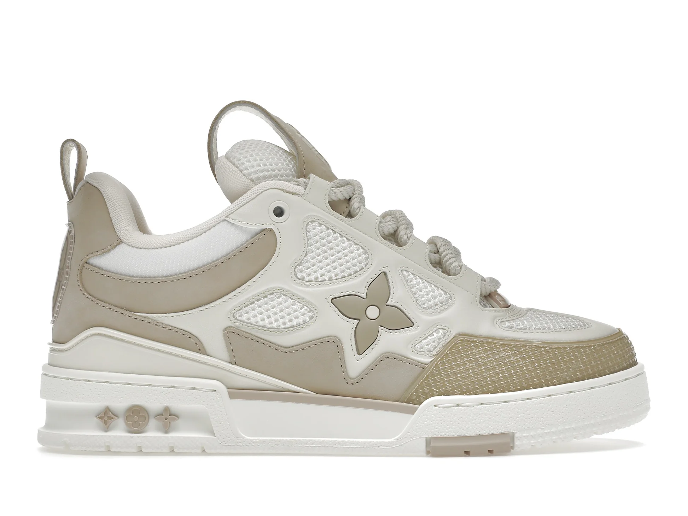

Découvrez Nos Modèles
1. Nike React Vision - Noir
Description : "Ces baskets noires sont le choix parfait pour allier style et confort. Idéales pour la vie urbaine, elles offrent une légèreté incomparable. À porter tous les jours pour un look discret mais élégant."
Prix : 150€
2.Dior B30 - Noir
Description : "Sobres et élégantes, ces baskets Dior sont idéales pour ceux qui aiment la simplicité du luxe. Avec leur design minimaliste, elles s’adaptent à toutes les occasions sans jamais décevoir."
Prix : 1 150€
3.New Balance 2002R - Bleu Marine
Description : "Un classique remis au goût du jour. Ces sneakers allient le confort New Balance à un look rétro, parfait pour les fans de style vintage et les adeptes de balades urbaines."
Prix : 160€

4.Louis Vuitton LV Trainer - Blanc et Beige
Description : "Ces baskets Louis Vuitton incarnent le luxe discret. Le mélange de blanc et beige les rend parfaites pour des occasions décontractées ou pour affirmer votre statut avec style."
Prix : 1 200€

5.Balenciaga Track - Noir
Description : "Ces sneakers futuristes semblent sorties d’un film de science-fiction. Elles sont robustes, audacieuses, et parfaites pour marquer votre style. Elles ne passeront pas inaperçues, même dans l’obscurité."
Prix : 895€ (futuristes et stylées, pour les vrais connaisseurs).
.
6.Crocs Cars Lightning McQueen
Description : "Prêtes à foncer droit sur le canapé ou à aller faire les courses en mode détente totale. Inspirées de Flash McQueen, elles mélangent fun et confort. Parfaites pour les fans de Cars, jeunes ou vieux."
Prix : 45€ (vous êtes Flash McQueen… à la maison).

7. Maisons Miara Vert
Description : "Ces sneakers Miara en vert éclatant sont la définition même de l’audace. Avec leur design unique et leur couleur vive, elles attirent tous les regards et apportent une touche de fraîcheur à votre look."
Prix : 250€ (parfaites pour faire tourner les têtes au passage)..

8. Adidas Campus - Classique et Intemporel
Description : "Les Campus, c’est LE modèle indémodable. Avec leur design rétro et leur confort légendaire, elles sont parfaites pour ceux qui aiment allier style et simplicité. À porter avec un jean ou un survêt', elles s’adaptent à toutes les vibes. Parfaites pour flâner en ville ou impressionner au quartier sans trop en faire."
Prix : 90€ (style premium, sans casser la tirelire)..
9Dior B22 Sneaker - Gris et Bleu
Description : "Avec leur design moderne et leurs tons élégants, ces Dior B22 ajoutent une touche sophistiquée à votre look. Idéales pour se démarquer en toute subtilité, elles conviennent aussi bien aux tenues sportives qu’aux ensembles casual chic."
Prix : 950€Espadrilles légères parfaites pour des journées d'été décontractées.
10. Balenciaga Paris Sneaker Destroyed
Description : "C’est comme si elles avaient traversé l’apocalypse… mais dans un style 100% Balenciaga. Ces sneakers déchirées ajoutent une touche d’audace à votre garde-robe. Attention : elles coûtent cher pour des chaussures qui semblent déjà avoir vécu plusieurs vies."
Prix : 1 450€ (déchirées mais luxueuses, c’est tout le concept)..